Exact lot from your risk
8 risk modes: $, % of balance, equity, free margin or a custom value, or % of the day, week or month start. Commission included, rounded to your broker's lot step. The lot turns red if the broker would not accept it.
رسک آپ طے کریں، لاٹ سائز پینل نکالے گا
A free-to-try trade assistant and lot size calculator for MetaTrader 5 and MetaTrader 4. Set your risk, drag Entry, SL and TP on the chart, and the panel works out the lot size. Orders go in with one click, guarded by a Prop Firm Guard and a news lock.
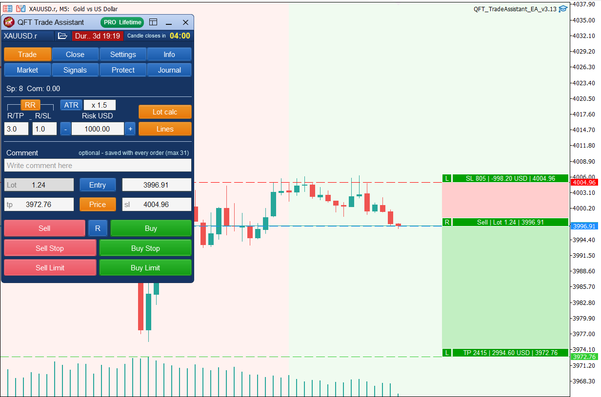
Most trade panels stop at the lot calculator and trade management. QFT Trade Assistant also guards your prop firm rules, locks trading around news, keeps a journal with a full report and marks patterns and strategies with a history score, on MT5 and MT4 with one licence key.
Swipe the table sideways to see every tool →
| Feature | Our tool QFT Trade AssistantMT5 & MT4 · Qazi Forex Tips | Forex Trade ManagerInvestSoft · MQL5 | Trade Assistant MT5E. Kravchenko · MQL5 | Position SizerEarnForex · free | One-Click TradingBuilt into MT5 |
|---|---|---|---|---|---|
| Lot size from your $ or % risk | Yes8 risk modes, commission included | Yes | Yes | Yes | No |
| Drag Entry, SL and TP before the trade | YesUSD shown, L lock, R reverse | Yes | Yes | Yes | No |
| Market, Stop and Limit orders in one click | YesAlways with SL and TP | Yes | Yes | Yes | Market orders only |
| Partial close, break-even and trailing stop | Yes10 TP + 10 SL levels, 6 trailing types | Yes | Yes7 trailing types | YesSplit TPs at entry | Trailing in points only |
| Hidden SL/TP and OCO orders | Yes | Yes | Yes | — | No |
| Prop Firm Guard: daily loss, max drawdown, trades per day | YesBlocks new trades before a rule breaks | Equity protect only | — | Risk caps only | No |
| News calendar and news lock on the panel | YesCountdown + news lines on the chart | — | — | — | Separate Calendar tab |
| Trading journal and report | YesEquity curve, drawdown, Monte Carlo | — | — | — | Basic history report |
| Chart patterns, Smart Money and strategies | Yes18 patterns + 11 strategies (2 ICT), history score | — | — | — | No |
| Market sessions on the chart | YesSydney, Tokyo, London, New York | — | — | — | No |
| Push alerts to your phone | YesTrades, guard, news, signals, price | — | Support / resistance breaks | — | Trade notifications |
| MT5 and MT4 | YesOne licence key for both | Sold separately ($99 each) | MT4 sold separately ($50) | YesFree for both | Built into each |
| Guide and support in Urdu | YesRoman Urdu guide, Urdu video, WhatsApp | English | English | 9 languages, no Urdu | — |
| Update from inside the panel | YesOne click | Via MQL5 Market | Via MQL5 Market | Manual download | — |
| Price | Free 3-day demo · monthly, yearly or lifetime | $99 · or $30 / 3 months | $100 · or $50 / year | Free | Free |
Product names belong to their owners. Qazi Forex Tips is not affiliated with them.
Trade, Close, Settings, Info, Market, Signals, Protect, Journal and Report: nine tabs built for our own Gold and forex trading and for our students. Manual trading only: the panel never trades on its own.
8 risk modes: $, % of balance, equity, free margin or a custom value, or % of the day, week or month start. Commission included, rounded to your broker's lot step. The lot turns red if the broker would not accept it.
See the loss and profit in USD and points before you click. L locks SL or TP, R flips Buy and Sell, and dragging the entry turns it into a Stop or Limit order by itself.
Buy, Sell, Buy/Sell Stop and Buy/Sell Limit, sent with SL and TP at once, no confirmation popup. ATR stop loss button, Risk:Reward auto TP, spread limit and split orders.
Set your daily loss limit, max drawdown, daily target and trades per day. The panel blocks new trades before a rule is broken, the way FTMO-style firms check you.
The whole week of high, medium and low impact news in your own PC time, with a countdown and news lines on the chart. Lock trading around big events like NFP and CPI.
Up to 10 TP and 10 SL levels, break-even with offset, 6 trailing methods (points, Fractals, MA, Parabolic SAR, ATR, High/Low bar), profit lock, OCO and hidden SL/TP.
Close Buy, Sell, Profit, Loss or All, delete pending orders by type, and auto-close at a profit or loss target or at a set time, such as Friday close.
18 patterns including FVG, Order Blocks, BOS/CHoCH and liquidity sweeps, plus 11 strategies including ICT OTE 79% and the ICT 2022 Model, with Entry, SL and TP. Each has a history score on your own chart, a Best button keeps only the ones that beat break-even there, and Use setup copies a signal to the Trade tab. Closed candles only, no repainting.
Note the setup, feeling and lesson for every trade, then open a colourful report with equity curve, win rate, drawdown and Monte Carlo, so you see what to repeat and what to stop.
Sydney, Tokyo, London and New York coloured on the chart with daylight saving handled. Account, symbol and trading statistics in one tab.
Alerts on the MT5 app when a trade opens or closes, break-even is set, a guard limit or news lock is hit, a signal appears or a price is reached.
One button shrinks the panel to risk, lot, Lines and Sell / Buy for scalping. The risk box turns yellow above 2% and red above 5% of your balance. 5 themes (Navy Blue default), size 75–150%, hotkeys, presets, a Start here help for new users, and one-click updates. One licence key works on MT5 and MT4.
Free update for every licence: installed panels update themselves from Info > About, new users download 3.13 below.
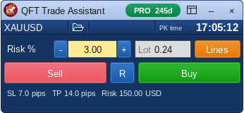
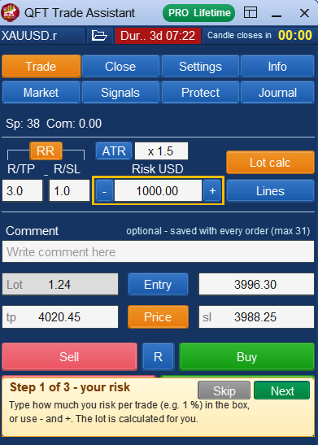
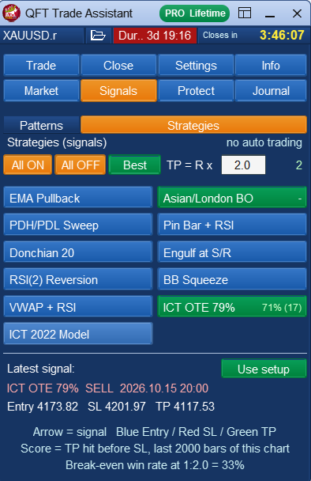
We coded 10 popular ICT models (including Silver Bullet, Judas swing, turtle soup, order block and FVG retests) and tested them on Gold, EURUSD, GBPUSD and USDJPY from 2012 to 2022 on M15 and H1, with the spread included. Only two stayed positive on every symbol: ICT OTE 79% (a strong candle breaks the 20-bar high or low, entry when price returns to 79% of the move) and the ICT 2022 Model (liquidity sweep of the 40-bar high or low, market structure shift, entry at 79% of the new move, stop beyond the sweep). On H1 both averaged about +0.2R per trade at 1:2 with a 42–43% win rate, so losing runs of 5–7 trades are normal. Past results do not guarantee future results; the panel shows each strategy's score on your own chart.
Also new: Navy Blue is the default theme and the panel is smaller without the bottom box. Read more about Smart Money Concepts and fair value gaps.
Choose $ or % of balance, equity or free margin, and your reward-to-risk.
Drag SL and TP to your levels on the chart. The lot size updates as you move them.
Market or pending, the order goes in with the right lot. Manage it later from the Close tab.
Works free for 3 days on a demo account, no key needed. For a live account, send your MT5 or MT4 account number on WhatsApp and you receive your licence key.
Free for the QFT community. Students and members of the Qazi Forex Tips community get the licence key free: ask on WhatsApp +92-323-6700010.
Inside each zip: the panel (.ex5 for MT5, .ex4 for MT4), the update library (.dll), the install guide in English and Roman Urdu, and the Features guide (PDF). Not sure which one? Check the name of your platform at the top of the window: MetaTrader 5 or MetaTrader 4.
MQL5 (MT4: MQL4). Put the .ex5 / .ex4 in Experts and the .dll in Libraries. Restart MetaTrader.Licensed users get every new version from the panel itself: Info → About → Update.
All updates →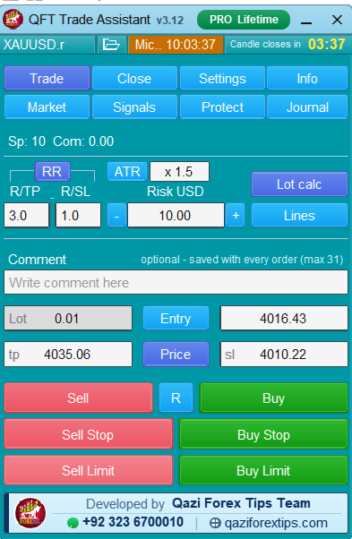
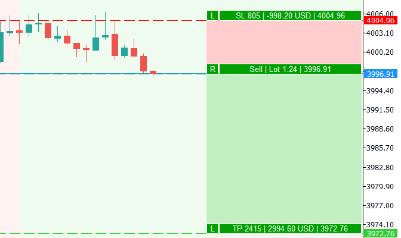
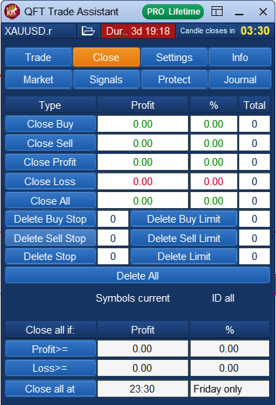
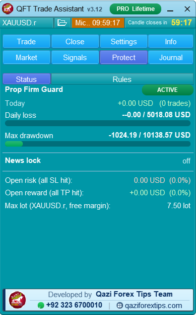
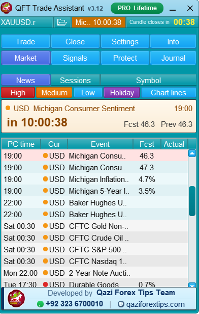
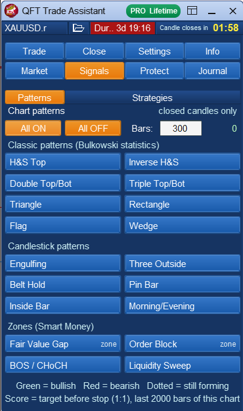

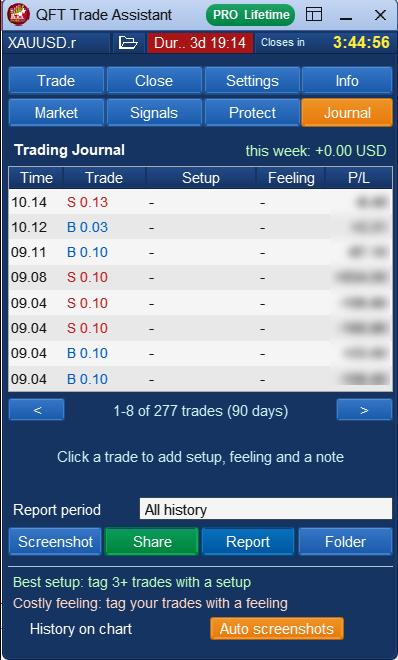
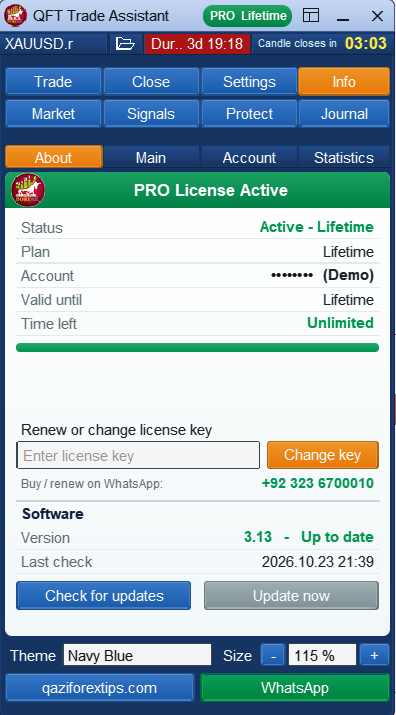
5.0 ★ average from 7 reviews. Real reviews, shared with permission.
sir bohat kamal ka tool ha.bohat bohat shukria sir g
I truly appreciate my mentor Sir Dr. Qazi Abdul Basit’s efforts in providing valuable tools like QFT Trade Assistant to the QFT community. Personally, I believe it can help traders improve their trading process, maintain discipline, and become more independent in their analysis. No tool can replace knowledge, practice, and risk management, but the right tool can make our learning journey more effective. Thank you, Respected Sir Qazi Abdul Basit Sahab, for continuously guiding us toward disciplined and independent trading. ❤️
Every time I was facing a big problem while entering the trade. Now I think a big hurdle is removed from my trading journey towards a successful achievement. Thank you so much dear Sir Dr. Abdul Basit & his teams. Lots of love & well wishes for you & your team.
Sir g jo bnda profitable hona chata h usky lye yeah all tools boht important hain
Ma Sha Allah, Its really Awesome. This thing solely can make a trader profitable if he has a control on his emotions. I have not seen such a perfect thing of its kind. A big salute to Sir Qazi and whole Team.
Sir solve our biggest problem because every trader need a good management of risk and lot size and very proudly to say Sir qazi has been solved our big problem to give trade assistant because it the breath of forex market thank-you for giving
No reviews yet. Already using the QFT Trade Assistant? Be the first to share your experience.
The licence key is tied to your MT5 or MT4 account number. Message us on WhatsApp for prices and your key.
Full panel on a demo account for 3 days. No key needed.
Use the panel on your live account, renew every month.
One key for the full year, with updates.
Pay once and keep using it, with online updates.
The panel does the maths; these lessons explain the rules behind it: how to size a lot, where to put the stop loss and when not to trade.
 Risk & Money Management · 9:39Lot size in forex: how to choose the right lot size on every trade
Risk & Money Management · 9:39Lot size in forex: how to choose the right lot size on every trade Risk & Money Management · 33:42Money management plan: grow a small account step by step
Risk & Money Management · 33:42Money management plan: grow a small account step by step Risk & Money Management · 18:38Where to set stop loss and take profit, and when to close half
Risk & Money Management · 18:38Where to set stop loss and take profit, and when to close half Market Analysis · 12:35Best time to scalp forex and Gold in Pakistan and India
Market Analysis · 12:35Best time to scalp forex and Gold in Pakistan and India Market Analysis · 13:10How to read and analyse NFP news data
Market Analysis · 13:10How to read and analyse NFP news data Price Action Basics · 39:13Rejection and momentum candles for a precise entry
Price Action Basics · 39:13Rejection and momentum candles for a precise entryA trade assistant is a panel that runs on your MetaTrader chart and does the trade maths for you. You choose how much to risk, place the stop loss and take profit, and it calculates the lot size and places the order. QFT Trade Assistant is a trade assistant for MT5 and MT4 made by Qazi Forex Tips.
Yes. Version 3.13 adds ICT OTE 79% and the ICT 2022 Model to the Signals tab, next to 9 other strategies and 18 patterns including FVG, order blocks, BOS/CHoCH and liquidity sweeps. Each shows Entry, SL and TP with a history score on your own chart. The panel never trades by itself.
Yes. The compact view (title bar button) shows only the risk, the lot, Lines and Sell / R / Buy, with SL, TP and the money at risk underneath, so the chart stays clear on a small screen.
No. It is a manual trading panel. It calculates the lot, places the orders you choose and helps you manage them. Every decision stays with you.
Yes. It does the same core jobs (lot size from your risk, Entry/SL/TP lines, one-click market and pending orders, partial close, break-even, trailing, hidden SL/TP and OCO) and adds a Prop Firm Guard, news lock, trading journal and report, 18 patterns and 11 strategies (including 2 ICT strategies) with a history score, market sessions, push alerts and Urdu support. One licence key works on MT5 and MT4.
Yes. It calculates the position size from your $ or % risk and SL like Position Sizer does, and then keeps managing the trade: 10 partial TP and SL levels, break-even, 6 trailing methods, a Prop Firm Guard and a news lock.
Most panels only calculate the lot and manage trades. QFT Trade Assistant also has a Prop Firm Guard, a news calendar with news lock, a trading journal with a full report, 18 patterns and 11 strategies (including 2 ICT strategies) with a history score, and a Roman Urdu guide with WhatsApp support. One licence key works on MT5 and MT4. See the comparison table at the top of this page.
MetaTrader 5 or MetaTrader 4 on Windows, with any broker. Download the version for your platform. It is made for Gold and the major forex pairs.
The panel runs on a demo account for 3 days without a key. To use it on a live account you need a licence key for your account number.
Yes. It works as a lot size (position size) calculator and a trade panel in one. Enter your risk in $ or % and drag the SL line; the lot updates live, and you can place the trade from the same panel.
Yes. Download it free from this page for MT5 or MT4. It runs on a demo account for 3 days without a key. A live account needs a licence key.
Yes. Each zip has the install guide in English and Roman Urdu, which Hindi speakers can read easily too, and the full video tutorial in Urdu/Hindi is on this page.
Click Update inside the panel. It downloads the newest version for you.
No tool can promise that. The panel keeps your risk fixed on every trade, which is the base of good money management. Trading carries high risk.